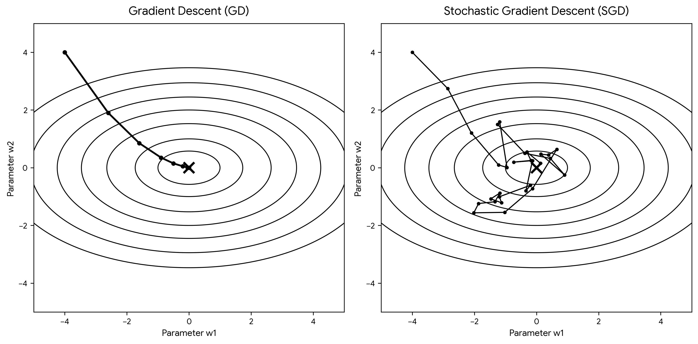
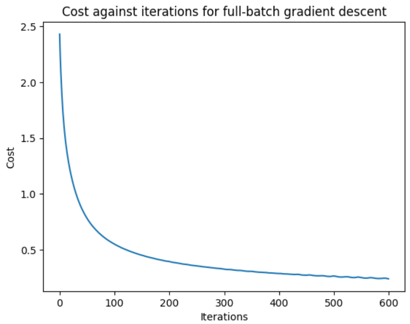
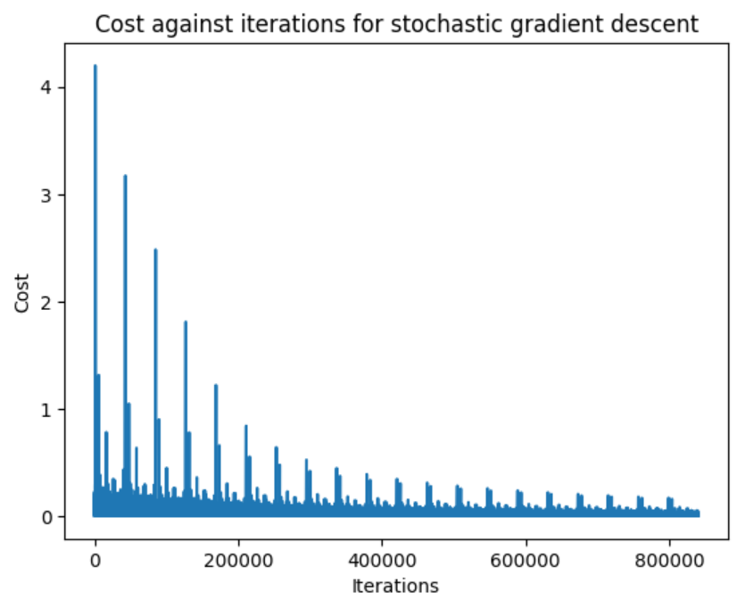

Stochastic Gradient Descent
In the last article, we deconstructed the inner workings of a Neural Network from scratch. In it, we had a look at how gradient descent applies to the optimisation problem. There is, however, a problem with our current method: it is quite resource-intensive, both in terms of memory and time. Using all 42,000 examples in a single forward and backward pass becomes increasingly expensive in both computation and memory. There is a way around this, and the underlying principle is remarkably simple: what if we trained the model on each individual training example, rather than training it on all of the training examples at once?
This is the technique of stochastic gradient descent, or SGD for short. We saw the example of standard gradient descent in the linear regression article. However, since our MNIST network has 42,000 training examples, the strategy of using a $784 \ \times \ 42000$ matrix to forward propagate is time and memory intensive. Instead stochastic gradient descent takes just one training example (effectively a $784 \ \times \ 1$ matrix) into the forward prop, cost calculation, backpropagation and parameter updates (in practice, modern neural networks are rarely trained using pure single-example SGD. Instead, mini-batch gradient descent provides a compromise: batches are small enough to allow frequent updates, but large enough to make efficient use of vectorised hardware). If we think about what is therefore going to happen to the loss function over epochs (an epoch elapses when the entire training set has been fed), both methods are used to reduce the cost function - the core gradient descent algorithm is unchanged. However, the "paths" they take from the loss generated by the initial weights to the lower cost is quite different. While gradient descent takes a smooth path down the surface, always heading pragmatically towards the local minimum, stochastic gradient descent wanders around the local minimum, following a jagged path before ultimately settling at the local minimum.

Why is stochastic gradient descent more efficient? Well it should be clear that it is quicker to perform forward propagation, cost calculation and backpropagation on an individual example instead of the entire training set, although each individual update contains much less information, we can make many such updates while a full-batch method is still computing a single update. This allows the model to begin responding to the data much earlier, rather than waiting for the entire training set to be processed before changing its parameters. The trade-off is that we have a lot more repetitions of the learning process, even if those repetitions make less efficient progress on their own as compared to a full-batch gradient descent epoch. In this case, the trade off is worth it. To illustrate this, I ran a version of the MNIST neural network (see previous article) with stochastic gradient descent and compared it to the full-batch version. These two loss-iteration graphs both took around 5 minutes to run, which demonstrates that even though SGD is significantly messier, it can make many more parameter updates within the same amount of wall-clock time.


So that's it, right? Not quite, because it turns out that even if we give both algorithms unlimited computing power and time, stochastic gradient descent still manages to outperform full-batch gradient descent on test data. Why?
This is still a subject of active debate among ML theorists, but one of the possible reasons is that the noise introduced by SGD can also act as a form of regularisation. Rather than following the exact gradient of the entire training set, SGD follows a noisy estimate of it. This randomness can discourage the model from simply fitting every small idiosyncrasy of the training data, which can improve generalisation when it comes to the test data. This is just a qualitative explanation since I haven't yet studied the stochastic calculus to give a quantitative explanation.
Looking forward, SGD also forms the foundation of many optimisation algorithms used in modern machine learning. Variants such as momentum and Adam modify how the gradients are used to update the parameters, often making training faster or more stable, and led to the advances in machine learning we enjoy today.